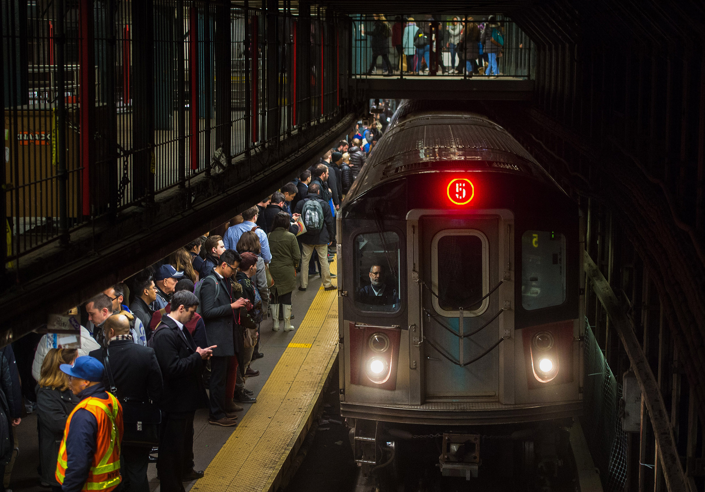

- New York City Subway is the oldest and largest transit systems in the world
- NYC subways operates 24/7
- It has the most subway station of any system in the world, with over 470 stations
- There are several abandoned subway station tunnels throughout the system
- Musicians, dancers and performers often entertain commuters in subway stations
- The subway system suffered extensive damage during Hurricane Sandy in 2012, with floods affecting stations and tunnels